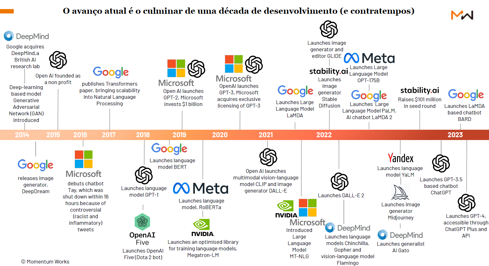
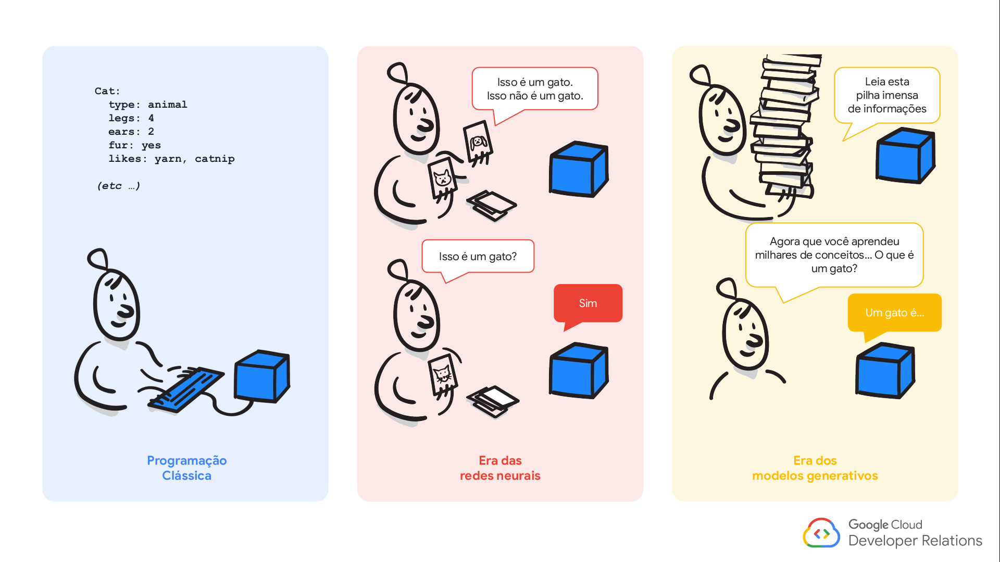

Inteligência Artificial na Saúde
Conceitos, Visão geral sobre IA e utilizações na área da Saúde
Jodavid Ferreira
UFPE
Professor Depto. de Estatística da UFPE
Quem é o Dr. Jodavid Ferreira?
- Graduação em Estatística pela UFPB - 2015;
- Mestrado em Estatística pela UFPE - 2017;
- Doutor em Estatística pela UFPE - 2021;
- Pós-Doutorado em Modelos de Decisão e Saúde (UFPB) - 2024;
Experiências e Linhas de Pesquisa
- Processamento de Imagens;
- Distribuições matriciais de Probabilidade;
- Distribuições de Probabilidade Fuzzy;
- Machine Learning, Deep Learning;
Experiências Profissionais - 2021 | 2024
- HartB Group e ThinkAI Group (Startups com foco em Inteligência Artificial);
- Certificado em IA pela Huawei e em Engenharia de dados pela Google;
Inteligência Artificial
Pense na pessoa mais inteligente que você conhece!!!
- O que você percebeu nessa pessoa para considerá-la como a mais inteligente para você?
- Ela é uma pessoa que pensa rápida? Ela é capaz de internalizar e aplicar novos conhecimentos imediatamente?
- Ela é altamente criativa, é capaz de gerar continuamente ideias novas que você nunca pensaria?
- Ela é uma pessoa altamente perceptiva e consegue captar todos os menores detalhes do mundo ao seu redor?
- Ou talvez, ela seja profundamente empática e entenda como você está se sentindo antes mesmo de você?
Inteligência Artificial
A Inteligência, mais especificamente inteligência humana é um termo interessante de discutir, ela envolve (Sternberg, 2000):
o cérebro humano, que é o órgão mais complexo do corpo humano;
a mente, sendo esta relacionada a capacidade de pensar, raciocinar, lembrar, entender e sentir;
o pensamento lógico, que é a capacidade de raciocinar e resolver problemas;
a compreensão, associado a capacidade de entender e interpretar informações;
a aplicabilidade, que vai de encontro a capacidade de aplicar conhecimentos e habilidade em sua maioria sendo em situações práticas;
Inteligência Artificial
- Independente de ser gênios da matemática ou vendedores carismáticos, nós utilizamos habilidades cognitivas como memória, atenção, reconhecimento de padrões, e outras habilidades para entender e ter sucesso no mundo todos os dias.
Em geral, a inteligência pode ser bem definida como a capacidade de um indivíduo realizar tarefas efetivamente usando seu próprio conhecimento, interpretação e perspicácia.
- O nível de inteligência varia de pessoa para pessoa em termos de como percebem e realizam ações.
Inteligência Artificial
- O conceito de IA está disponível desde a década de 1940 (Newell, 1982);
- O primeiro método de computação baseado em “inteligência” foi introduzido pelo matemático Alan Turing em 1947. Ele afirmou que mais descobertas sobre a inteligência das máquinas poderiam ser obtidas usando programas de computador e simulação;
Inteligência Artificial
- Durante a década de 1950, Turing também discutiu as circunstâncias para considerar uma máquina tão inteligente como um humano. Ele opinou fortemente que qualquer máquina pode ser capaz de imitar e fingir que é um ser humano para outro humano, sem deixar dúvidas, e assim ser considerado inteligente.
- Esse conceito de testar a inteligência da máquina, introduzido por Alan Turing, é conhecido como o
Teste de Turing.
- Qualquer máquina que complete com sucesso o Teste de Turing pode ser considerada inteligente, mas uma máquina extraordinariamente inteligente pode sempre imitar humanos mesmo sem conhecer muito sobre eles.
Inteligência Artificial
O que é o Teste de Turing?
- Turing propôs seu conceito por meio do jogo chamado “party test”, também conhecido como “teste de imitação”
O conceito básico deste jogo é descobrir se o participante é humano ou um computador.
O cenário 1 do teste consiste em três jogadores, onde o primeiro jogador é um “homem”, o segundo jogador é uma “mulher” e o terceiro jogador é o “interrogador”, que pode ser tanto um homem quanto uma mulher. Os dois primeiros jogadores estarão em salas diferentes, e o interrogador não sabe quem são os jogadores. Agora, o desafio do interrogador é descobrir o gênero dos dois primeiros jogadores com base nas respostas escritas dadas por eles para as perguntas feitas pelo interrogador. Outro desafio será criado fazendo com que o primeiro jogador dê intencionalmente respostas incorretas às perguntas, o que pode induzir o interrogador a inferir que o primeiro jogador é uma “mulher” em vez de um “homem”. A Figure 1 mostra o cenário do teste de imitação.
Inteligência Artificial
O que é o Teste de Turing?
Turing tentou projetar este jogo com uma pequena alteração, na qual substituiu um dos dois primeiros jogadores por um computador no cenário de teste 2.
Ele analisou se a máquina tinha a capacidade de agir como um jogador humano aplicando sua própria inteligência.
Ele provou através do teste que o computador tem uma melhor capacidade de confundir o interrogador com sua inteligência, de modo que o interrogador tem a possibilidade de interpretar erroneamente o primeiro jogador como humano em vez de computador.
A inteligência da máquina foi comprovada através do teste de Alan Turing e amplamente aceita pela comunidade de pesquisa na época.
Inteligência Artificial
- Entretanto, o termo “Inteligência Artificial” efetivamente cunhado por John McCarthy em 1956, em uma conferência no Dartmouth College, marcando o início de uma nova era nos estudos de pesquisa em IA (McCorduck and Cfe, 2004).
- E com esse novo termo e ramo de pesquisa, os objetivos estavam/estão à missão de usar computadores e a ciência para estudar e reproduzir a inteligência e as habilidades de tomadas de decisão associadas a um ser humano.
- Assim, a utilização da IA é investigar a viabilidade de máquinas simularem aspectos do intelecto humano através de modelos computacionais e algoritmos, que foram impulsionadas pelos trabalhos de pesquisadores como Turing, Shannon, McCarthy, Minsky, entre outros.
Inteligência Artificial
Timeline 1 da IA.(fonte:Weijermars, et.al. )
Inteligência Artificial

Timeline 2 da IA.(fonte: Momentum Works report – The future by ChatGPT)
Inteligência Artificial

(fonte: AI Experience - Google)
Inteligência Artificial
Existem três abordagens da Inteligência Artificial:
Behaviorismo
é uma escola de pensamento que diz que a inteligência depende da percepção e da ação. Assim, o comportamento da inteligência só pode ser demonstrado no mundo real através da constante interação com o meio.
IA Simbólica
tenta replicar a inteligência humana, como a capacidade de resolver problemas através de regras e lógica. Por meio de símbolos, como palavras e conceitos, uma estrutura lógica é organizada que permite ao sistema de IA realizar as tarefas.
IA Conexionista
é baseada na simulação dos componentes do cérebro (modelagem da inteligência humana), como neurônios e sinapses. Aqui as soluções são baseadas em padrões e aprendizado de máquina, tentando imitar o funcionamento do cérebro humano.
Inteligência Artificial
- Exemplo de Behaviorismo: Aprendizado por reforço (Reinforcement Learning)
- Exemplo de IA Simbólica: Sistemas Especialistas
- Exemplo de IA Conexionista: Redes Neurais - CNN

Inteligência Artificial
A Inteligência Artificial é dividida em duas partes:
Inteligência Artificial Geral ou IA Forte
é quando uma máquina realmente entende o que está acontecendo. Podem existir emoções e criatividade. Na maior parte, é o que vemo em filmes de ficção científica.
IA Fraca
é quando uma máquina realiza a correspondência entre padrões, e está relacionada a tarefas específicas, e as capacidades não são facilmente transferíveis para outros sistemas.
Inteligência Artificial
Inteligência Artificial
Machine Learning
Deep Learning
IA Generativa
Inteligência Artificial
Inteligência Artificial
Machine Learning
Deep Learning
IA Generativa
Ambiente da IA
O ambiente de inteligência artificial consiste em cinco componentes principais:
- Máquina: é um componente básico e implícito tanto em ambientes não baseados em IA quanto em ambientes baseados em IA;
- Inteligência Humana: esse componente é essencial para incorpor ‘inteligência’ à máquina, para que ela atue como uma máquina inteligente carregando inteligência humana, na forma de uma lista de instruções também chamada de programas, softwares ou codificação;
- Internet das Coisas (IoT): Atualmente, a Internet das Coisas (IoT) têm uma relação muito próxima com o ambiente de IA, uma vez que a maioria das atuais tomadas de decisão dependem dos dados que são produzidos em tempo real pelos humanos e pelas máquinas;
- Algoritmos de Aprendizado de Máquina (ML): algoritmos de aprendizado de máquina desempenham um papel importante, na IA. Esses algoritmos são muito úteis na previsão de eventos com base nos dados disponíveis. Dentres os tipos de aprendizados estão os supervisionados (Regressão, Classificação), não supervisionados (métodos de agrupamento, redução de dimensionalidade), entre outros.
- Ciência e Engenharia de Dados: A Ciência e Engenharia de Dados é outro componente importante no ambiente de IA. A análise de dados desempenha um papel importante na maioria das aplicações em tempo real, pois qualquer tomada de decisão feita pela máquina por meio de programação depende principalmente da análise eficiente de dados.
Ambiente da IA
O ambiente de inteligência artificial consiste em cinco componentes principais:
- Máquina: é um componente básico e implícito tanto em ambientes não baseados em IA quanto em ambientes baseados em IA;
- Inteligência Humana: esse componente é essencial para incorpor ‘inteligência’ à máquina, para que ela atue como uma máquina inteligente carregando inteligência humana, na forma de uma lista de instruções também chamada de programas, softwares ou codificação;
- Internet das Coisas (IoT): Atualmente, a Internet das Coisas (IoT) têm uma relação muito próxima com o ambiente de IA, uma vez que a maioria das atuais tomadas de decisão dependem dos dados que são produzidos em tempo real pelos humanos e pelas máquinas;
- Algoritmos de Aprendizado de Máquina (ML): algoritmos de aprendizado de máquina desempenham um papel importante, na IA. Esses algoritmos são muito úteis na previsão de eventos com base nos dados disponíveis. Dentres os tipos de aprendizados estão os supervisionados (Regressão, Classificação), não supervisionados (métodos de agrupamento, redução de dimensionalidade), entre outros.
- Ciência e Engenharia de Dados: A Ciência e Engenharia de Dados é outro componente importante no ambiente de IA. A análise de dados desempenha um papel importante na maioria das aplicações em tempo real, pois qualquer tomada de decisão feita pela máquina por meio de programação depende principalmente da análise eficiente de dados.
Machine Learning
Machine Leaning (ML) ou Aprendizado de máquina (AM) é um subcampo da Inteligência Artificial que estuda, desenvolve e analisa os algoritmos de aprendizado. Através de utilização dos métodos de AM, modelos baseado em dados podem ser criados para solucionar um determinado tipo de problema específico que de IA, dentre eles, aprendizados supervisionados, não supervisionados e aprendizagem por reforço.

Machine Learning
Inicialmente, as aplicações que eram consideradas de AM eram apenas as desenvolvidas estritamente pela comunidade da computação, contudo, no final dos anos 90, as aplicações de AM começaram a ter intersecções com as de estatística.
Atualmente, a comunidade de AM é bastante interdisciplinar, sendo a estatística uma das áreas. Enquanto que até os anos 90, métodos criados pela estatística começavam a ser incorporados em AM, atualmente a direção oposta está cada vez mais comum: métodos desenvolvidos por AM começaram a ser usados em estatística.
Dessa forma, hoje os algoritmos existentes em Machine Learning e Inteligência Artificial possuem como base em sua maioria conceitos da Estatística e Computação.
Inteligência Artificial
Quais as hype do momento?
- OpenAI:
- DALL-E - modelo de geração de imagens;
- ChatGPT - modelo de linguagem natural;
- SORA - modelo de texto-para-vídeo;
- Whisper - modelo de audio-para-texto;
- Meta:
- T5 - modelo de tradução de linguagem natural;
- Llamma3.1 - modelo de linguagem natural;
- Google:
- BERT - modelo de linguagem natural;
- GEMINI - modelo multimodal;
- LaMDA - modelo de linguagem natural;
- Anthropic:
- CLAUDE 3 - modelo de linguagem natural;
Inteligência Artificial
GEMINI é um modelo de IA desenvolvido pelo Google que pode entender e gerar texto, através de próprios textos, imagens e áudio. O modelo é capaz de responder a perguntas, criar histórias e até mesmo compor músicas.
Inteligência Artificial
SORA é um modelo de IA desenvolvido pela OpenAI que pode transformar texto em vídeo. O modelo é capaz de criar vídeos de alta qualidade a partir de descrições de texto.
Inteligência Artificial
Wonder Studio é um estúdio de animação japonês que utiliza IA para criar personagens e histórias. O estúdio foi fundado por Yoichi Ochiai, um artista e pesquisador de IA.
Inteligência Artificial
Viggle AI é uma empresa que utiliza inteligência artificial para criar animações e vídeos.
Inteligência Artificial
GPT-4o da OpenAI, modelo multimodal que consegue interpretar áudio, visão e texto em tempo real.
Inteligência Artificial
GPT-o1 da OpenAI, é uma solução que “tem fortes capacidades de raciocínio e amplo conhecimento do mundo”.
IA na área da Saúde
Aplicações de IA na Saúde
A Survey of Large Language Models in Medicine: Progress, Application, and Challenge1
- Este artigo fornece uma visão detalhada sobre o desenvolvimento e a implementação de Modelos de Linguagem de Grande Escala (LLMs) na área da saúde: aborda aplicações práticas, desafios e oportunidades;
Aplicações de IA na Saúde
Quais são os objetivos de LLM para saúde?
- Objetivo 1: Superar a competência de nível humano.
Aplicações de IA na Saúde
Quais são os objetivos de LLM para saúde?
- Objetivo 2: Propriedades Emergentes de LLMs Médicos com o Aumento do Tamanho do Modelo1.
Aplicações de IA na Saúde

Aplicações de IA na Saúde
Med-PaLM
O Med-PaLM é um modelo de linguagem grande (LLM) projetado para fornecer respostas de alta qualidade a perguntas médicas, baseado no modelo de linguagem PaLM 2, uma nova iteração do modelo de linguagem da Google que trouxe melhorias significativas em várias tarefas de benchmark para grandes modelos de linguagem (LLMs).
O Med-PaLM 2 foi o primeiro a atingir o nível de especialista humano em responder perguntas no estilo USMLE1.
Como forma de melhorar o modelo com novas informações (novos datasets), foi utilizado o treinamento via Finetuning;
Aplicações de IA na Saúde
As bases de dados utilizados foram:
- MedQA (USMLE): Conhecimento médico geral no exame de licenciamento médico dos EUA.
- MedMCQA: Conhecimento médico geral em exames de admissão médica indianos.
- PubMedQA: Literatura científica biomédica.
- MMLU: Conhecimento médico abrangendo anatomia, conhecimento clínico, medicina universitária, genética médica, medicina profissional, e biologia universitária.
- LiveQA: Conhecimento médico geral procurado pelos consumidores.
- MedicationQA: Conhecimento sobre medicamentos frequentemente procurado pelos consumidores
- HealthSearchQA: Conhecimento médico geral procurado pelos consumidores (Google).
Que são consideradas bases de dados médicas que cobrem amplamente o conhecimento clínico e incluem.
Aplicações de IA na Saúde
- Exemplo de utilização:

Você pode me descrever uma análise sobre Raio-X?
Achados:
- Dispositivos: Nenhum.
- Pulmões: Sem pneumotórax. Sem derrame pleural significativo. Pulmões parecem claros.
- Cardiomediastinal: Tamanho normal do coração. Contornos mediastinais dentro dos limites normais.
- Outros: Nenhuma anormalidade esquelética aguda.
Impressão: Nenhuma doença ativa observada no tórax.
- Link: https://sites.research.google/med-palm/
- Link do paper no nature; https://www.nature.com/articles/s41586-023-06291-2
Tokens e Embeddings
- Tokens e Embeddings são a base dos modelos de LLMs.
A tokenização é o processo de pegar o texto e transformar as sequências de entrada para números.
- é um mapeamento direto de palavras para números, a mesma palavra vai receber o mesmo token (pode ser modelado, mas rapidamente se torna muito grande).
- os tokens geralmente são palavras, mas também podem ser frases, sinais de pontuação ou até caracteres individuais.
- A tokenização é o primeiro passo no processamento de linguagem natural (NLP) e é essencial para a pré-processamento de texto.
- ela ajuda a preparar os dados textuais para análise, tornando-os mais estruturados e fáceis de trabalhar.
Tokens e Embeddings
Apesar da referẽncia, palavras grandes podem ser divididas em subtokens menores, sendo assim, em 1.000 tokens de palavras em português correspondem aproximadamente a 700 a 750 palavras do nosso idioma.
Essa contagem de palavras em um texto pode variar bastante dependendo da linguagem, do tamanho das palavras e do uso de pontuações.

Tokens e Embeddings
Embeddings são vetores numéricos obtidos dos tokens e representam palavras, frases ou documentos.
Os embeddings é o processo de transformar o mapeamento do vetor de texto de entrada na matriz de embeddings1.
Os embeddings faz uma representação mais rica do relacionamento entre os tokens (pode limitar o tamanho e pode ser aprendida).
Os embeddings conseguem capturar a estrutura semântica das palavras ou frases e suas relações no texto.
Atualmente, elas são criadas usando técnicas de machine learning, como Word2Vec ou GloVe e deep learning, como BERT, GPT-3, e os modelos mais atuais de LLMs.
Tokens e Embeddings
Tokens e Embeddings
As word embeddings transformam os valores inteiros únicos obtidos a partir do tokenizador em um array \(n\)-dimensional.
Por exemplo, a palavra ‘gato’ pode ter o valor ‘20’ a partir do tokenizador, mas a camada de embedding utilizará todas as palavras no seu vocabulário associadas a ‘gato’ para construir o vetor de embeddings. Ela encontra “dimensões” ou características, como “ser vivo”, “felino”, “humano”, “gênero”, etc.
Assim, a palavra ‘gato’ terá valores diferentes para cada dimensão/característica.
Tokens e Embeddings
Detalhes importantes:
Similaridade do Cosseno (\(Sim_{cos}\)):
- Maior valor (próximo de 1): Maior similaridade.
- Menor valor (próximo de -1): Maior dissimilaridade.
Distância do Cosseno (\(D_{cos} = 1 - Sim_{cos}\)):
- Maior valor (próximo de 2): Maior dissimilaridade.
- Menor valor (próximo de 0): Maior similaridade.


Inteligência Artificial - LLMs
Alguns conceitos importantes quando se trabalha com algoritmos de LLMs, são:
Tokenização: Os dados de entrada são divididos em tokens, focando em texto, é a associação de número inteiro único para cada palavra ou sub-palavra;
Embedding: cada token é transformado em um vetor denso (embedding);
Camadas de Encoder: são responsáveis por processar e refinar os embeddings;
Self-Attention Mechanism: Cada token na sequência avalia a importância de todos os outros tokens, permitindo a incorporação de contexto global em cada embedding.
Saída do Encoder: O resultado das camadas de encoder é um conjunto de embeddings contextuais, onde cada token embedding contém informações sobre todo o contexto da sequência.
Inteligência Artificial - LLMs
Alguns conceitos importantes quando se trabalha com algoritmos de LLMs, são:
Preparação da Entrada do Decoder: A entrada do decoder é preparada os embeddings contextuais do encoder;
Camada de Self-Attention do Decoder: Semelhante ao encoder, o decoder usa múltiplas cabeças de atenção para capturar diferentes aspectos da relação entre tokens, mas respeitando a ordem causal;
Camada de Atenção Encoder-Decoder: A camada de atenção encoder-decoder permite que o decoder se concentre em diferentes partes da entrada do encoder, dependendo do token que está sendo gerado.
Saída do Decoder: O resultado do decoder é um conjunto de embeddings contextuais finais, que são usados para prever o próximo token na sequência de saída.
Predição do Próximo Token: O modelo prediz o próximo token na sequência de saída com base nos embeddings contextuais finais.
Inteligência Artificial - LLMs
Os modelos possuem alguns hiperparâmetros ajustáveis para inferência dos retornos.
- Os principais são Temperatura, Top k e Top p (geralmente eles mantém essa ordem de execução no modelo).
Entretanto, vamos falar primeiramente definições de Top-k e Top-p e depois detalharemos sobre a Temperatura.
- Top-k
O parâmetro top-k limita as previsões do modelo aos k tokens mais prováveis em cada etapa da geração. Ao definir um valor para k, você está instruindo o modelo a considerar apenas os k tokens mais prováveis. Isso pode ajudar a ajustar a saída gerada e garantir que ela siga padrões ou restrições específicas.
Inteligência Artificial - LLMs
- Top-p, também conhecido como amostragem por núcleo (nucleus sampling), controla a probabilidade cumulativa dos tokens gerados. O modelo gera tokens até que a probabilidade cumulativa exceda o limite escolhido (p). Essa abordagem permite um controle mais dinâmico sobre o comprimento do texto gerado e incentiva a diversidade na saída, incluindo tokens menos prováveis quando necessário.
O top-k proporciona uma aleatoriedade controlada ao considerar um número fixo de tokens mais prováveis, enquanto o top-p permite um controle dinâmico sobre o número de tokens considerados, resultando em diferentes níveis de diversidade no texto gerado.
Inteligência Artificial - LLMs
A probabilidade cumulativa refere-se ao somatório das probabilidades de um conjunto de eventos ou opções, somadas em ordem decrescente de probabilidade até que um certo limite seja atingido
Exemplo:
Suponha que o modelo tenha os seguintes tokens candidatos, com suas probabilidades associadas:
| Token | Probabilidade |
|---|---|
| Token A | 0,40 |
| Token B | 0,30 |
| Token C | 0,15 |
| Token D | 0,10 |
| Token E | 0,05 |
Inteligência Artificial - LLMs
Agora, se você definir top-p = 0,85, o modelo irá selecionar tokens até que a probabilidade cumulativa atinja 0,85.
- Token A: 0,40 (probabilidade cumulativa = 0,40)
- Token B: 0,30 (probabilidade cumulativa = 0,40 + 0,30 = 0,70)
- Token C: 0,15 (probabilidade cumulativa = 0,70 + 0,15 = 0,85)
Assim, apenas os tokens A, B e C serão considerados, pois a soma de suas probabilidades atinge 0,85. Tokens com probabilidade mais baixa (como D e E) serão excluídos da escolha, a menos que top-p seja aumentado.
Inteligência Artificial - LLMs
- Temperatura: em geral é aplicada primeiro. Ela ajusta as probabilidades de todos os tokens candidatos, “suavizando” ou “acentuando” a distribuição de probabilidade.
- Com uma temperatura baixa (próxima de 0), as probabilidades mais altas se destacam, e o modelo tende a ser mais conservador, escolhendo sempre os tokens mais prováveis. Com uma temperatura alta (próxima de 1), a distribuição fica mais uniforme, permitindo maior aleatoriedade.
Função de Ativação softmax:
Inteligência Artificial - LLMs
O parâmetro de temperatura é aplicado diretamente à função softmax.
Efeito da Temperatura
À medida que a temperatura se aproxima de 0, as probabilidades de saída se tornam mais “agudas”. Uma das probabilidades ficará próxima de 1.
Conforme a temperatura aumenta, as probabilidades de saída se tornam mais “planas” ou “uniformes”, reduzindo a diferença entre as probabilidades dos diferentes elementos.
O intervalo do parâmetro de temperatura é definido entre 0 e 1 na documentação da OpenAI. No contexto da Cohere, os valores de temperatura estão dentro do intervalo de 0 a 5.
Inteligência Artificial - LLMs
Código em python para analisar-mos a temperatura1:
Inteligência Artificial - LLMs
Em termos práticos, alguns problemas que temos com LLMs (SLMs) são:
- Alucinações: o modelo gera informações que não estão presentes nos dados de treinamento;
- Viés: o modelo pode reproduzir e amplificar preconceitos e estereótipos presentes nos dados de treinamento;
- Insegurança: o modelo pode fornecer respostas incorretas ou enganosas, sem indicar que não tem certeza sobre a resposta;
- Incapacidade de generalização: o modelo pode ter dificuldade em lidar com situações fora do conjunto de dados de treinamento.
Inteligência Artificial - LLMs
Duas alternativas para mitigar esses problemas são:
Fine-Tuning: ajustar o modelo para um conjunto de dados específico, para que ele possa aprender a tarefa desejada;
RAG (Retrieve and Generate): que é um modelo que combina a capacidade de recuperar informações de um grande banco de dados com a capacidade de gerar texto de um modelo de linguagem.
Referências
Reid, Machel, et al. (2024). Gemini 1.5: Unlocking multimodal understanding across millions of tokens of context. arXiv preprint arXiv:2403.05530 .
Vaswani, A., N. Shazeer, N. Parmar, J. Uszkoreit, L. Jones, A. N. Gomez, L. Kaiser, and I. Polosukhin (2017). Attention is all you need. Advances in neural information processing systems 30.
Devlin, J., M.-W. Chang, K. Lee, and K. Toutanova (2018). Bert: Pre-training of deep bidirectional transformers for language understanding. arXiv preprint arXiv:1810.04805.
Hirschberg, J. and C. D. Manning (2015). Advances in natural language processing. Sci- ence 349 (6245), 261–266.
Zhou, H., Liu, F., Gu, B., Zou, X., Huang, J., Wu, J., … & Clifton, D. A. (2023). A survey of large language models in medicine: Progress, application, and challenge. arXiv preprint arXiv:2311.05112.
Singhal, Karan, et al. (2023). Large language models encode clinical knowledge. Nature, 620(7972), 172-180.
https://github.com/AI-in-Health/MedLLMsPracticalGuide
https://sites.research.google/med-palm/
Referências
Fontes das imagens utilizadas:
https://iaexpert.academy/2017/03/23/ia-simbolica-x-ia-conexionista/
https://www.zendesk.com.br/blog/inteligencia-artificial-simbolica-e-conexionista/
https://bleedaiacademy.com/overview-of-the-field-artificial-intelligence-part-4/
https://www.researchgate.net/publication/ 221053431_Application_of_Mixture_of_Experts_to_Construct_Real_Estate_Appraisal_Models
https://lena-voita.github.io/nlp_course/word_embeddings.html
OBRIGADO!
Slide produzido com quarto
Lattes: http://lattes.cnpq.br/4617170601890026
LinkedIn: jodavidferreira
Site Pessoal: https://jodavid.github.io/
e-mail: jodavid.ferreira@ufpe.br

Inteligência Artificial na Saúde - Jodavid Ferreira